Project Objectives
This project analyses environmental and epidemiological data from Gavà and the Baix Llobregat region between 2004 and 2025 using RStudio and statistical visualization techniques.
- Analysis of atmospheric pollutants from the XPVCA network.
- Study of meteorological conditions from Meteocat XEMA stations.
- Epidemiological analysis using SIVIC respiratory infection data.
Air Pollutants in Gavà (2004–2025)

Traffic-related pollutants such as NO, NO₂ and NOx show clear morning and evening peaks during weekdays due to commuting traffic and urban activity. Ozone behaves differently, reaching maximum concentrations during the afternoon because of photochemical reactions driven by solar radiation.
Main Pollutants


2025 Calendar Visualizations
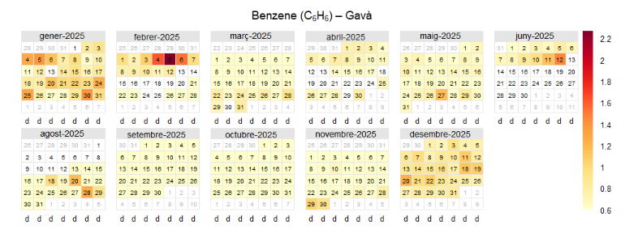
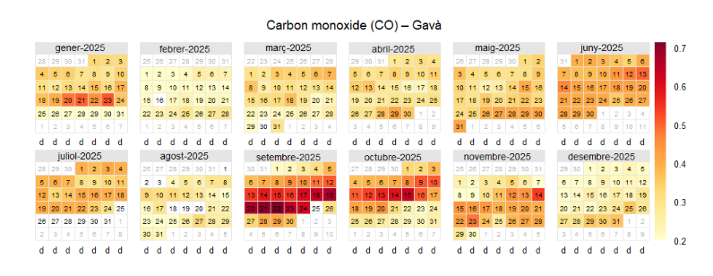
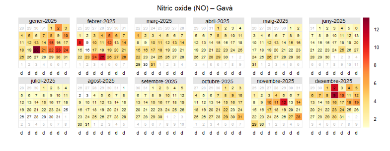
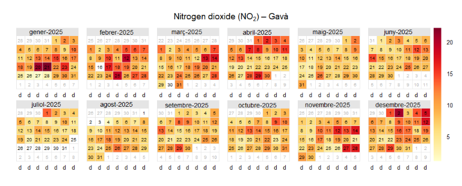
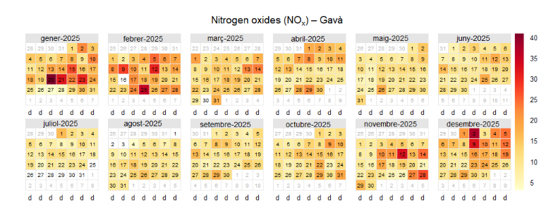
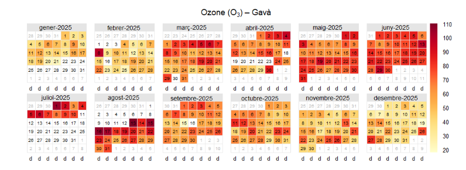
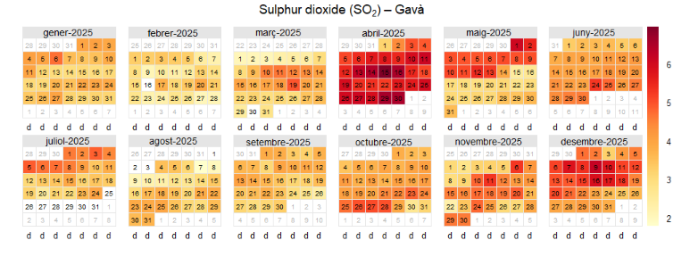
Respiratory Infections (SIVIC)
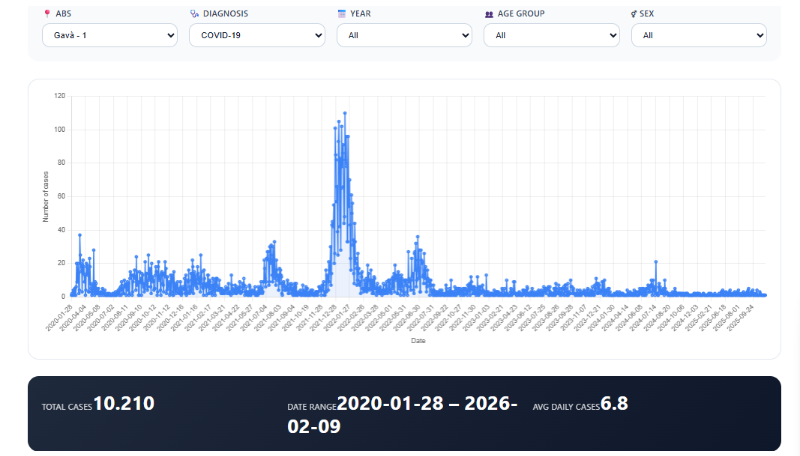
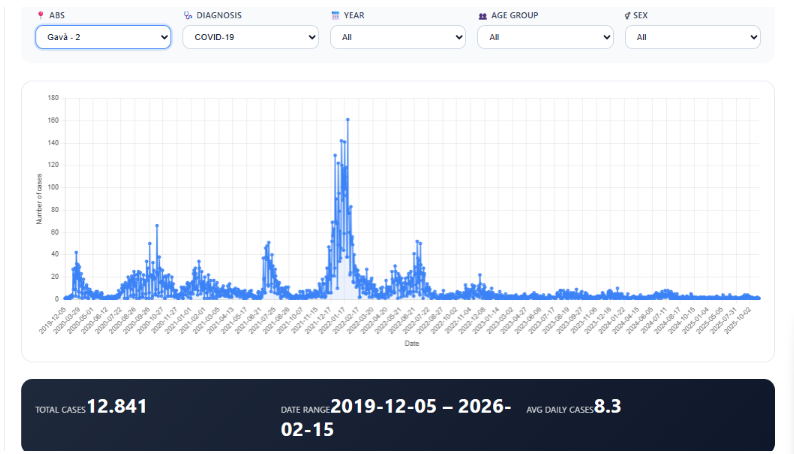
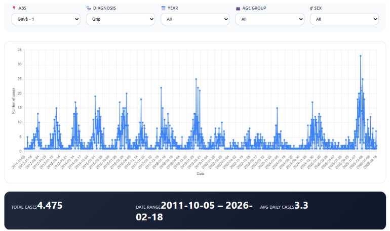
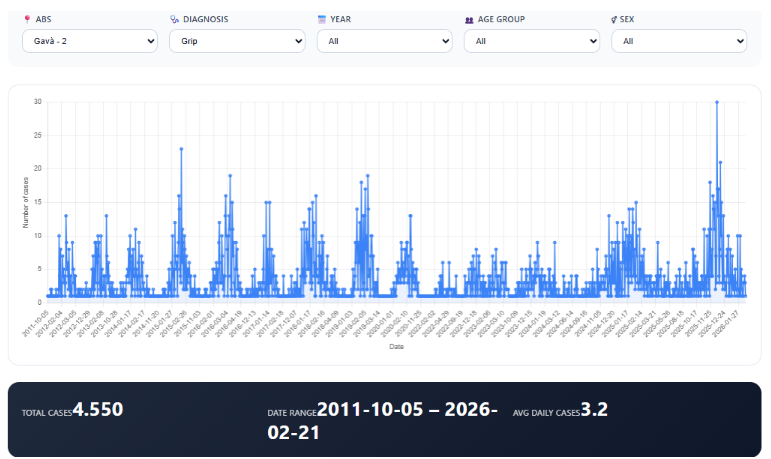
The epidemiological data show clear seasonal behaviour for influenza and multiple epidemic waves during the COVID-19 pandemic. Winter periods present the highest respiratory infection rates.
Origin of Air Pollution in Gavà
Using RStudio and the OpenAir library, pollution roses were created using wind direction and wind speed data in order to identify the main origins of pollutants affecting Gavà.


Final Conclusion
The results demonstrate strong temporal relationships between atmospheric pollution, meteorological conditions and respiratory infections in the Baix Llobregat region. Traffic emissions, seasonal weather patterns and solar radiation play major roles in pollutant behaviour, while respiratory infections show clear epidemic and seasonal cycles. This study highlights the importance of environmental monitoring and epidemiological surveillance for understanding public health risks associated with air pollution.